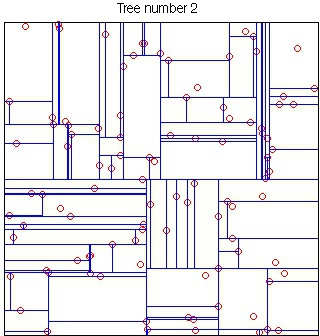
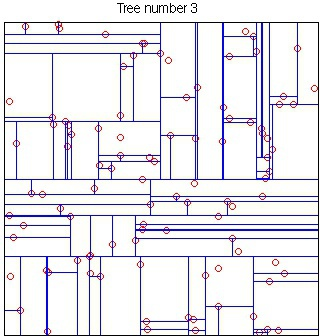
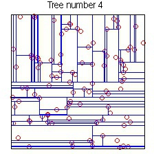
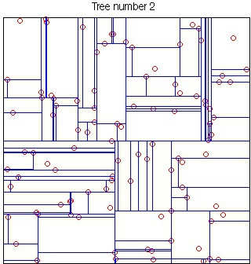
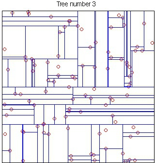
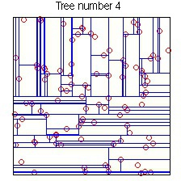

Table of Contents
VLFeat implements the randomized kd-tree forest from FLANN. This enables fast medium and large scale nearest neighbor queries among high dimensional data points (such as those produced by SIFT).
Introduction
A kd-tree is a data structure used to quickly solve nearest-neighbor queries. Consider a set of 2D points uniformly distributed in the unit square:
X = rand(2, 100) ;
A kd-tree is generated by using the vl_kdtreebuild function:
kdtree = vl_kdtreebuild(X) ;
The returned kdtree indexes the set of
points X. Given a query point Q, the
function vl_kdtreequery returns its nearest neighbor
in X:
Q = rand(2, 1) ;
[index, distance] = vl_kdtreequery(kdforest, X, Q) ;
Here index stores the index of the column
of X that is closest to the point Q.
distance is the squared euclidean distance between X(index),Q.
A kd-tree is a hierarchal structure built by partitioning the data
recursively along the dimension of maximum variance. At
each iteration the variance of each column is computed and the data is
split into two parts on the column with maximum variance. The
splitting threshold can be selected to be the mean or the median (use
the ThresholdMethod option of
vl_kdtreebuild).
Querying
vl_kdtreequery uses a best-bin first search
heuristic. This is a branch-and-bound technique that maintains an
estimate of the smallest distance from the query point to any of the
data points down all of the open paths.
vl_kdtreequery supports two important operations:
approximate nearest-neighbor search and k-nearest
neighbor search. The latter can be used to return the
k nearest neighbors to a given query point Q.
For instance:
[index, distance] = vl_kdtreequery(kdtree, X, Q, 'NumNeighbors', 10) ;
returns the closest 10 neighbors to Q
in X and their distances, stored along the columns of
index and distance.
The MaxComparisons option is used to run an ANN query.
The parameter specifies how many paths in the best-bin-first search of
the kd-tree can be checked before giving up and returning the closest
point encountered so far. For instance:
[index, distance] = vl_kdtreequery(kdtree, X, Q, 'NumNeighbors', 10, 'MaxComparisons', 15) ;
does not compare any point in Q with more than 15
points in X.
Randomized kd-tree forests
VLFeat supports constructing randomized forests of
kd-trees to improve the effectiveness of the representation in high
dimensions. The parameter NumTrees of
vl_kdtreebuild specifies how many trees to use in
constructing the forest. Each tree is constructed independently.
Instead of always splitting on the maximally variant dimension, each
tree chooses randomly among the top five most variant dimensions at
each level. When querying, vl_kdtreequery runs
best-bin-first across all the trees in parallel. For instance
kdtree = vl_kdtreebuild(X, 'NumTrees', 4) ;
[index, distance] = vl_kdtreequery(kdtree, X, Q) ;
constructs four trees and queries them.
 




